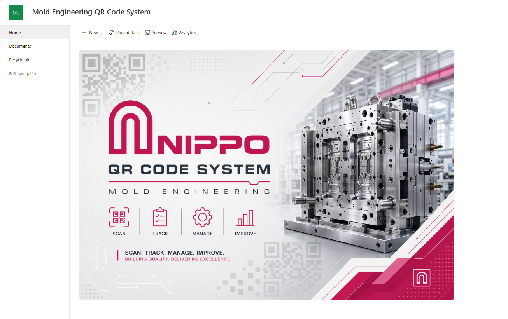
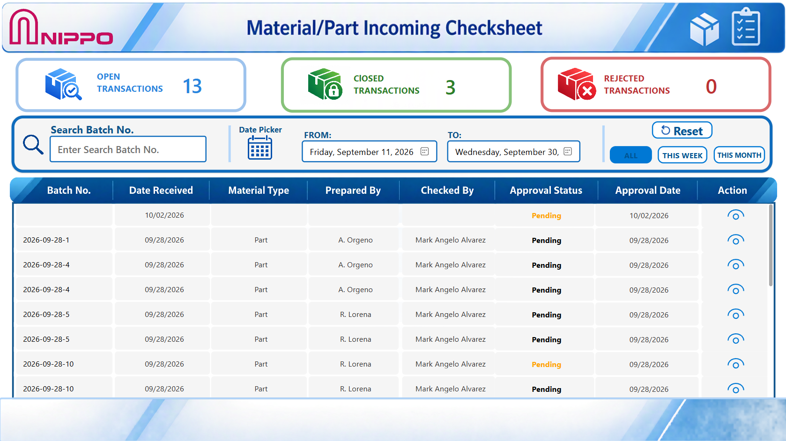

IT Systems
Business applications, support workflows, approval systems and internal tools.
I help organizations improve their IT operations through practical systems, process automation, digitalization, infrastructure support, and business applications.
ABOUT
I am a detail-oriented IT Systems and Infrastructure Specialist with hands-on experience in ERP systems, Microsoft 365 administration, Power Automate, Power Apps, SharePoint, cybersecurity monitoring, network infrastructure and enterprise IT operations. My approach is practical: understand the business process, support the people using it, improve the system behind it, and document the result so the solution can be maintained.
CAPABILITIES
Business applications, support workflows, approval systems and internal tools.
Digital forms, automated notifications, approval flows and process improvement.
Dashboards and analysis interfaces for quality, training and operational data.
HTML, CSS, JavaScript, React, Powerapps, Power automate and practical application development.
Windows, Active Directory, servers, NAS, networking, hardware and peripheral troubleshooting.
SAP Business One support, ERP assistance, master data, reporting and business-system operations.
Administration and digital solutions using Microsoft 365, SharePoint, Power Apps and Power Automate.
SQL queries, database assistance and Crystal Reports supporting operational and ERP information needs.
SELECTED WORK

QUALITY • DIGITALIZATION
Digital training record system using QR verification, centralized records, digital submission, approval, and real-time access.

QUALITY • DATA ANALYTICS
A visual dashboard designed to analyze quality defects, part numbers, defect quantities, mold-related issues, and correction trends for faster decision-making.

ENGINEERING • DIGITALIZATION
QR-based system providing direct access to mold preventive maintenance and repair history records.

IT • PROCESS AUTOMATION
Internal IT support system for managing requests, tracking issues, monitoring status, and improving response visibility.

QUALITY • INCOMING INSPECTION
Digital incoming inspection solution for recording material and part checks, verifying quality requirements, and maintaining traceable inspection records for incoming items.
EXPERIENCE
IT OPERATIONS
Supporting users, systems, networks, Microsoft 365, hardware and internal IT processes.
DIGITALIZATION
Turning manual workflows into structured digital request, approval and monitoring processes.
APPLICATION DEVELOPMENT
Developing practical applications and interfaces for quality, training, engineering and operations.
LET'S CONNECT
I'm interested in practical IT solutions, automation, application development and digital transformation projects.
Email Me